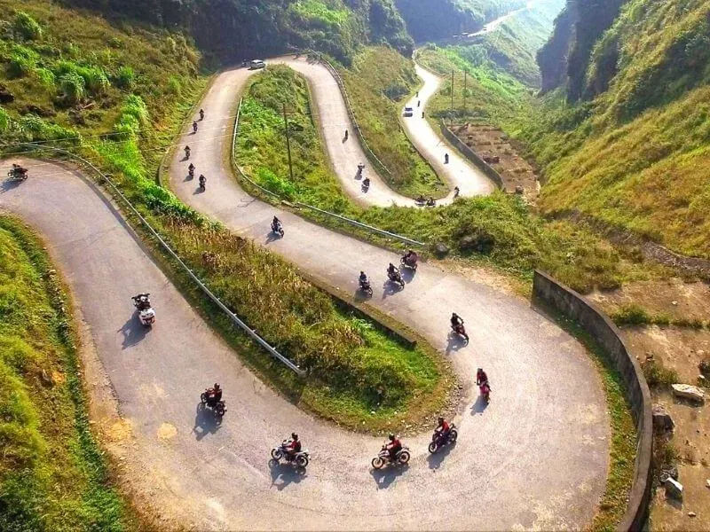

Giang noi bat voi ve dep vua hung vi, gai goc lai vua tho mong den nao long. Noi day noi tieng voi Cao nguyen da Dong Van (Cong vien dia chat toan cau) va dong song Nho Que xanh biec chay duoi chan deo Ma Pi Leng huyen thoai.
Trai nghiem: Di thuyen tren song Nho Que qua Hem Tu San - hem vuc sau nhat Dong Nam A, check-in cot co Lung Cu, Dinh thu ho Vuong.
Thoi diem vang: Thang 10 - 12 la mua hoa Tam Giac Mach no ro va mua hoa Cai vang, bien cao nguyen da thanh buc tranh ruc ro.